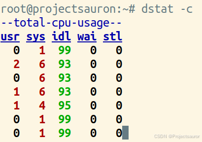

Linux 下查看 CPU 使用率
[toc]
CPU 使用率是最直观和最常用的系统性能指标，更是我们在排查性能问题时，通常会关注的第一个指标。
一、什么是 CPU 使用率
Linux 作为一个多任务操作系统，将每个 CPU 的时间划分为很短的时间片，再通过调度器轮流分配给各个任务使用，因此造成多任务同时运行的错觉。
为了维护 CPU 时间， Linux 通过事先定义的节拍率(内核中表示为 HZ)，触发时间中断，并使用全局变量 Jiffies 记录了开机以来的节拍数。每发生一次时间中断，Jiffies 的值就加 1。节拍率 HZ 是内核的可配选项，可以设置为 100、250、1000 等。不同的系统可能设置不同数值。
Linux 通过 /proc 虚拟文件系统，向用户空间提供了系统内部状态的信息，而 /proc/stat 提供的就是系统的 CPU 和任务统计信息。比方说，如果你只关注 CPU 的话，可以执行下面的命令：

第一列表示的是 CPU 编号，如 cpu0、cpu1 ，而第一行没有编号的 cpu ，表示的是所有 CPU 的累加结果。其他列则表示不同场景下 CPU 的累加节拍数，它的单位是 USER_HZ，也就是 10 ms（1/100 秒），所以这其实就是不同场景下的 CPU 时间。下面，依次为各列的含义：
- user（通常缩写为 us），代表用户态 CPU 时间。注意，它不包括下面的
nice时间，但包括了guest时间。 - nice（通常缩写为 ni），代表低优先级用户态 CPU 时间，也就是进程的 nice 值被调整为
1-19之间时的 CPU 时间。这里注意，nice 可取值范围是 -20 到 19，==数值越大，优先级反而越低==。 - system（通常缩写为 sys），代表内核态 CPU 时间。
- idle（通常缩写为 id），代表空闲时间。注意，它不包括等待 I/O 的时间（iowait）。
- iowait（通常缩写为 wa），代表等待 I/O 的 CPU 时间。
- irq（通常缩写为 hi），代表处理硬中断的 CPU 时间。
- softirq（通常缩写为 si），代表处理软中断的 CPU 时间。
- steal（通常缩写为 st），代表当系统运行在虚拟机中的时候，被其他虚拟机占用的 CPU 时间。
- guest（通常缩写为 guest），代表通过虚拟化运行其他操作系统的时间，也就是运行虚拟机的 CPU 时间。
- guest_nice（通常缩写为 gnice），代表以低优先级运行虚拟机的时间。
而我们通常所说的 CPU 使用率，就是除了空闲时间外的其他时间占总 CPU 时间的百分比，用公式来表示就是：
$$
CPU 使用率 = 1 - \frac{空闲时间}{总 CPU时间}
$$
但直接用 /proc/stat 的数据这是开机以来的节拍数累加值，所以直接算出来的，是开机以来的平均 CPU 使用率，一般没有什么参考价值。
事实上，为了计算 CPU 使用率，性能工具一般都会取间隔一段时间（比如 1 秒）的两次值，作差后，再计算出这段时间内的平均 CPU 使用率，即：
$$
平均 CPU 使用率 = 1 - \frac{空闲时间_{new} - 空闲时间_{old}}{总 CPU时间_{new} - 总 CPU时间_{old}}
$$
跟系统的指标类似，Linux 也给每个进程提供了运行情况的统计信息，也就是 /proc/[pid]/stat。不过，这个文件包含的数据就比较丰富了，总共有 52 列的数据，这里不再赘述。
二、查看 CPU 利用率
1、使用 top 查看
top 是一个命令行工具安装在任何 Linux 系统上，它主要提供由 Linux 内核管理的所有当前运行任务的动态实时统计汇总。它监视 Linux 系统上进程、CPU 和内存的完整利用率。
1 | |
结果如下：
- us: 花费在用户空间上的 CPU 时间百分比 (running user-spawned processes)。
- sy: 花费在内核空间的 CPU 时间百分比（running system processes）。
- ni: 运行用户定义优先级的进程所花费的 CPU 时间百分比（aspecified nice value）。
- id: CPU 空闲时间的百分比。
- wa: 用于等待硬件 I/O 的 CPU 时间百分比。例如：等待硬盘读完数据。
- hi: 用于处理硬件中断的 CPU 时间百分比。例如：网卡(或任何硬件)中断 CPU 以通知它有新数据到达。
- si: 用于处理软件中断的 CPU 时间百分比。例如：高优先级业务导致 CPU 中断。
- st: 从虚拟机窃取的 CPU 时间百分比。例如：为了处理物理机的工作负载，需要从虚拟机“窃取”资源的 CPU
可以非常清楚地看到 CPU 使用率。不过，要注意的是，CPU 默认显示的是所有 CPU 的平均值。这时候，按下数字 1 就可以看到每个 CPU 的使用率了：
继续往下看，空白行之后是进程的实时信息，每个进程都有一个 %CPU 列，表示进程的 CPU 使用率。它是用户态和内核态 CPU 使用率的总和，包括进程用户空间使用的 CPU、通过系统调用执行的内核空间 CPU 、以及在就绪队列等待运行的 CPU。在虚拟化环境中，它还包括了运行虚拟机占用的CPU。
可以发现，top 并没有细分进程的用户态 CPU 和内核态 CPU。
2、用 pidstat 查看
pidstat 是一个专门分析每个进程 CPU 使用情况的工具。比如，下面的 pidstat 命令，就间隔 1 秒展示了进程的 5 组 CPU 使用率，包含：
- 用户态CPU使用率(%usr);
- 内核态CPU 使用率(%system)
- 运行虚拟机CPU使用率(%guest)
- 等待 CPU使用率(%wait);
- 总的CPU使用率(%CPU)
最后的 Average 部分，还计算了5组数据的平均值。

3、用 ps 查看
ps 命令可用于确定哪个进程占用了 CPU。
1 | |
如果要仅查看正在运行的进程，可以使用以下命令：
1 | |
这个命令将过滤掉标题行。
如果要仅显示前几个进程，可以将输出通过head命令进行截取。例如，要显示前 5 个进程，可以使用以下命令：
1 | |
4、用 htop 查看
htop 是一个交互式的进程查看器和系统监控工具，它提供了比传统的 top 命令更多的功能和更友好的界面。它提供了 CPU 和系统资源利用率的详细摘要。可以垂直滚动或水平滚动以显示更多详细信息。它还在命令列下提供进程路径。
1 | |
在 CPU 状态区域主要显示 CPU 使用情况，htop 还为将不同颜色来区分是使用情况：
- 蓝色的表示 low-prority(低优先级)使用
- 绿色的表示 normal(标准)使用情况
- 红色的表示 kernel(内核)使用情况
- 青色的表示 virtuality(虚拟性)使用情况
5、用 nmon 查看
nmon 是 Linux 系统的一个性能监控工具。它用于实时监测系统的 CPU、内存、磁盘、网络等资源的使用情况，帮助管理员分析系统性能并做出优化调整。
nmon 工具以文字界面的形式展示监控结果，提供了丰富的信息和统计数据，可以实时查看系统的运行状况。它的输出格式清晰简洁，容易理解和分析。
使用 nmon 命令：
1 | |
然后按 t 查看利用更多资源的进程：

按下 c 键可以来查看 CPU 的使用率：

6、用 atop 查看
atop 是在 Linux 系统的一个高级性能监控工具。与 nmon 类似，atop 也用于实时监测系统的各种资源的使用情况，但它提供了更为详细和全面的性能数据，让管理员更深入地了解系统运行情况。
1 | |

也可以使用以下命令把 CPU 使用率记录到文件中，下次直接读取文件查看 CPU 利用率。写入文件使用“-w 文件名”，读出文件使用“-r 文件名”：
1 | |
7、用 glances 查看
glances 是一种跨平台的实时系统监控工具，该工具是用python编写的，并使用库程序详细提供了对 CPU、内存、磁盘、网络和进程等系统资源的监测信息。glances 以直观和交互的方式呈现系统监控数据，并提供了丰富的选项和功能，方便用户进行系统性能的实时监控和分析。

8、用 vmstat 查看
vmstat（virtual memory statistics）是一个在 Linux 系统上用于监视虚拟内存、进程、CPU 和 IO 性能的命令行工具。
1 | |

各个字段你含义如下：
- 进程 procs
- r：在运行队列中等待的进程数 。
- b：在等待io的进程数 。
- 内存 memoy：
- swpd：现时可用的交换内存（单位KB）。
- free：空闲的内存（单位KB）。
- buff: 缓冲去中的内存数（单位：KB）。
- cache：被用来做为高速缓存的内存数（单位：KB）。
- swap 交换页面
- si: 从磁盘交换到内存的交换页数量，单位：KB/秒。
- so: 从内存交换到磁盘的交换页数量，单位：KB/秒。
- io 块设备:
- bi: 发送到块设备的块数，单位：块/秒。
- bo: 从块设备接收到的块数，单位：块/秒。
- system 系统：
- in: 每秒的中断数，包括时钟中断。
- cs: 每秒的环境（上下文）转换次数。
- cpu 中央处理器：
- cs：用户进程使用的时间 。以百分比表示。
- sy：系统进程使用的时间。 以百分比表示。
- id：中央处理器的空闲时间 。以百分比表示。
如果想使用 vmstat 命令以 2 秒的间隔监视系统资源，间隔 5 次。在这种情况下，可以使用以下命令：
1 | |

9、用 sar 查看
sar（System Activity Reporter）是一个在 Linux 系统上用于收集、报告和存档系统活动数据的命令行工具。
使用 sar 命令，可以按特定时间间隔监视 CPU 使用率：
1 | |
也可以通过如下来显示每隔 3 秒 10 条后的运行数据。
1 | |

10、dstat
dstat 是一个在 Linux 系统上使用的用于监控系统资源使用情况的命令。它可以提供关于 CPU、内存、磁盘、网络等方面的实时数据，并以可读性高的格式输出。该工具结合了 vmstat，iostat，ifstat，netstat 以及更多的信息。并且支持输出 CSV 格式报表，并能导入到 Gnumeric 和 Excel 以生成图形
1 | |

每秒 CPU 使用率情况获取：
1 | |

最占 CPU 的进程获取：
1 | |
11、iostat
这个命令主要用来查看 IO 使用情况，也可以来查看 CPU，不如上述命令常用。

三、总结
Linux 系统上有各种可用的工具和命令来监视 CPU 使用率和系统资源利用率，那么多命令工具可根据实际情况，直观可视化的 nmon 和 galances 比较方便查看结果。